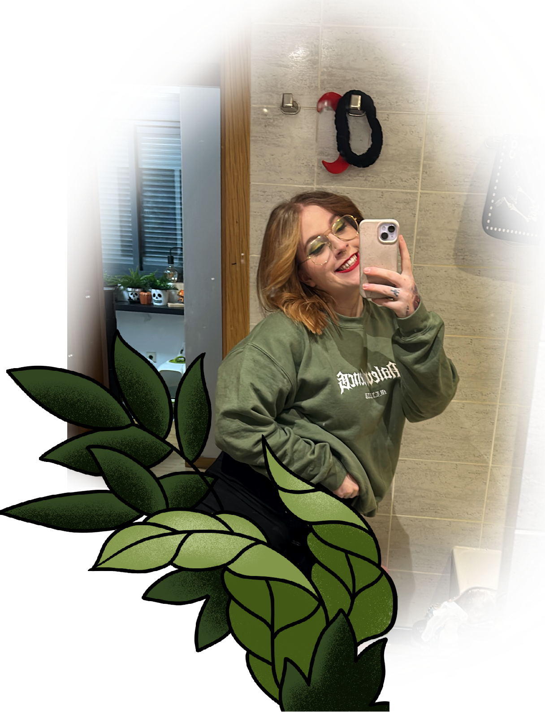
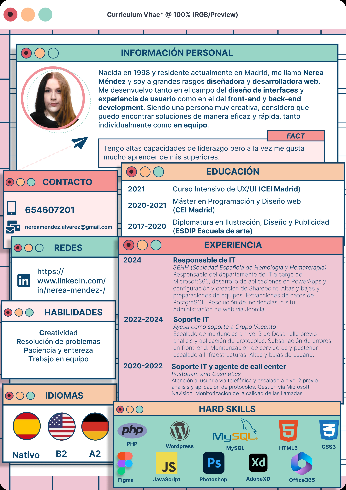

¿Quién soy y qué hago?
Me gradué en 2021 por CEI Madrid en diseño y maquetación web, posteriormente estudié programación fullstack aunque lo mío es lo visual. Dediqué tres años de mi vida, de 2017 a 2020 a un Máster en Ilustración, Diseño y Publicidad que me enseñó las bases de todo lo que hago ahora, desde gráfica impresa a todo lo que implique pantallas. Me gusta dedicar mi tiempo libre a dibujar, es mi pasión. A menudo publico diseños de personajes o simplemente pequeños bocetos en mi perfil de instagram. También estoy disponible en Linkedin donde se puede ver mi trayectoria profesional.
Telefono: 654607201
Email: nereamendez.alvarez@gmail.com
Currículum:

